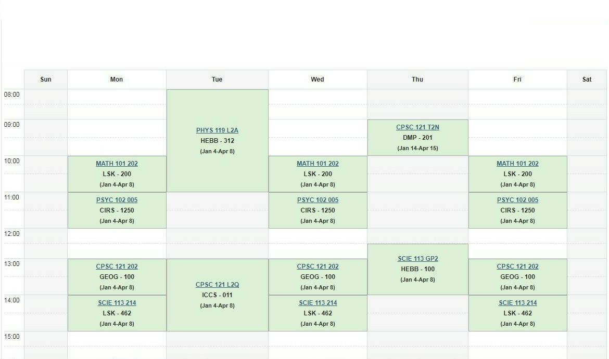

As a UBC student, you’re more likely to check your SSC than hang out with your buddies. This blog will cover some basic SSC knowledge, provide sample semester schedules from current students, and gather all of the materials to assist you with course registration.
The SSC, short for the Student Service Centre, is the main interface for UBC students to access their student records, applications, registration, grades, housing, exam schedules, and more. To access the SSC, you’ll need to set up a Campus wide login (CWL) account and provide your student number.
SSC’s bi-annual crash! This usually happens before important dates such as registration and grades announcements. Wait it out for a few hours or keep on refreshing your laptop and it should be all good.
Firstly, familiarize yourself
with the website by exploring
its features. The SSC is so
extensive that covering all of
its information in this blog
would take an eternity. Each
category has a straightforward
name, so you should be able to
discover what you're looking for
quickly.
Let’s say you’re looking to see
your tuition summary. You should
head to Finance > Tuition
History and click on a specific
session (e.g. 2021W).
If you’re curious to know when your exams are scheduled, you can click Exams > Exam Schedules. The same steps apply to housing, registration, grades, personal info, and more.
A second tip is that there is zero shame in reaching out to your peers or your advisor for help. No question is a stupid question!
Course registration can be stressful. But fear not, the UBC website has a page for a detailed overview on course registration such as creating a killer worklist, browsing for courses (including the Standard Timetables), and some tips when preparing for your registration. The Ubyssey also offers a complete guide to course registration here .
If you’re worried about your progress to your degree completion, check out how to use the Degree Navigator tool here . It’s an effective way of estimating different degree combinations (e.g. a double major, a major with a minor, etc.) and keeping track of your degree progress.
We got you! The UI design is so outdated that most students feel overwhelmed. Explaining the tool in words might confuse you even more, so watch this video to understand your report better. Best of luck!
No worries! Gisau has got your back:
LFS - Jade Permata
Sauder - Eisen Gabrielle
Computer Science - Julian Widjaja
Arts - Kathleen Jeanne Haryanto
International Economics - Primo Huang
Engineering - Russell Sumarno